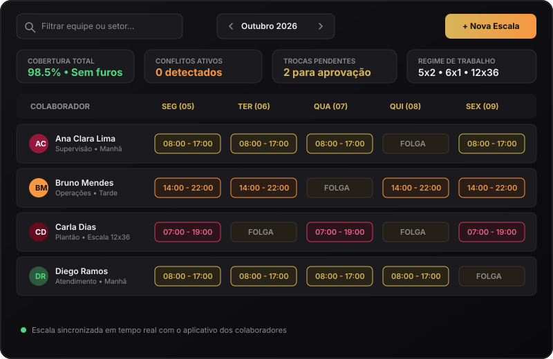

✦ Escalas Inteligentes
Planejamento de turnos e folgas com agilidade total
Monte e distribua grades de horários com total suporte a regimes flexíveis (5x2, 6x1, 12x36). O sistema avisa sobre conflitos de horários, respeita intervalos de descanso da legislação trabalhista e notifica os colaboradores instantaneamente a cada nova publicação.
- Visualização clara mensal, semanal e por setor da empresa
- Gestão simplificada de trocas de plantão com aprovação em 1 clique
- Alertas automáticos de conflitos e interjornada

Espaço para foto do projeto: Grade de Escalas